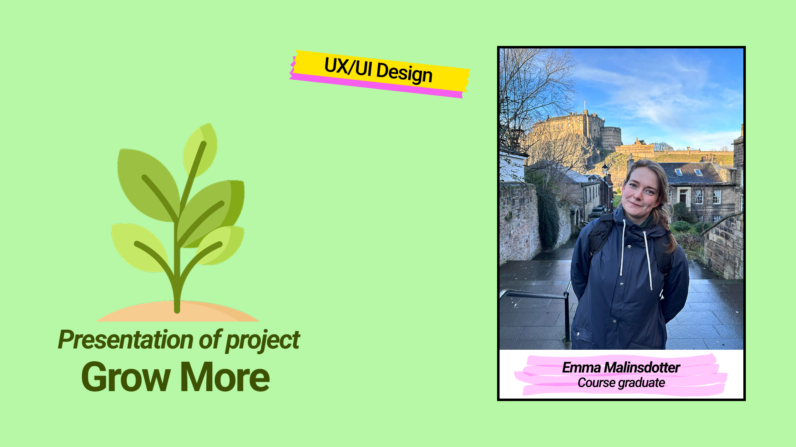
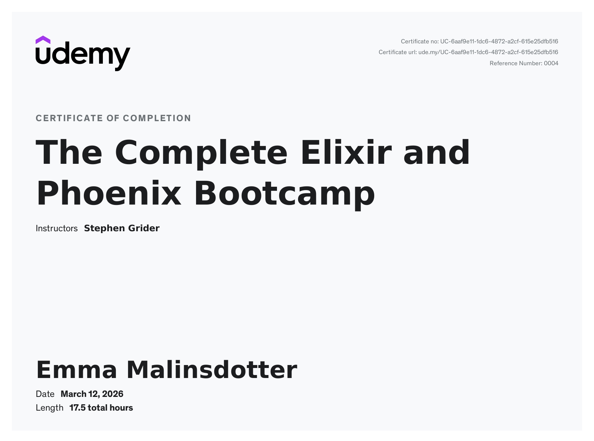
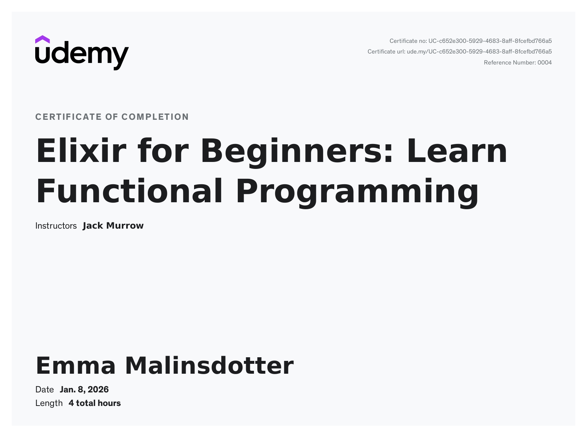

SKILL SET


UX/UI designer
Front End Developer
e-mail: emma.malinsdotter@outlook.com
LinkedIn: www.linkedin.com/in/emma-malinsdotter-21022a1b2 GitHub: https://github.com/MiniNinja97 Experience EducationI’m Emma, a frontend developer and UX/UI designer from Sweden, passionate about creativity, problem-solving, and building engaging digital experiences.
I thrive on learning quickly, adapting to different workflows, and taking ownership of projects, which allows me to contribute confidently and independently.
I studied UX and UI design at Beetroot Academy, which gave me a solid foundation in user-centered thinking. Through my frontend education and practical experiences during internships, I further developed my UX and UI skills, allowing me to seamlessly integrate design principles into my development work and create interfaces that are both functional and visually appealing.
My technical expertise includes:
During my professional experiences and internships, I gained hands-on skills in:
I also completed my thesis project, “A Game Obviously,” a real-time text-based web game built with Elixir and Phoenix. I implemented LiveView for real-time updates, GenServer for player-specific processes, and PubSub for server-to-frontend communication. This project demonstrates my ability to combine backend logic, database management, and frontend design into a complete, interactive application.
Outside of work, I’m a cheerful and positive person with a love for the outdoors, which I share with my two dogs. I’d call myself a bit of a nerd – I adore games, from board games to video games, and I devour anything with a great story. I have a mountain of books at home and love seeing stories adapted into films, series, or games to experience them in all kinds of ways. I’m also a lifelong Moomin fan with a slightly crazy collection of Moomin mugs (currently up to 126!). Above all, I’m driven to keep learning, creating, and moving forward.
Area: UX/UI design
Brief:

Area: UX/UI design
Brief:

Area: UX/UI design
Brief: Video showcase

Area: UX/UI design
Brief:

Thesis project for my FrontEnd education. A text-based game played in the browser, built in Elixir using Phoenix, PubSub, and GenServer.
A web-based real-time chat app. Fullstack with TypeScript, React, Express, and AWS.
This project is deployed and the link can be found in the README file
A responsive summer toy webshop built with React, Joi, HashRouter, Zustand, and Firestore as part of a school project.
This project is deployed and the link can be found in the README file
This is a simple stopwatch built with React that tracks elapsed time with start, stop and reset controls. It uses React hooks like useState, useEffect, and useRef to update the timer and ensure accurate real‑time tracking in the browser. The component formats and displays minutes, seconds and milliseconds for an interactive timekeeping experience.
This project is deployed and the link can be found in the README file
Area: UX/UI design
This project is deployed and the link can be found in the README file
Our first school project, where we got to try working with HTML and CSS for the first time. It was a simple introduction to building and styling web pages, helping us understand layout, structure, and basic design principles.
This project is deployed and the link can be found in the README file
Specialized in UX/UI design principles with practical exercises in Figma.

Completed a comprehensive Elixir and Phoenix course covering functional programming and web development.

Completed an introductory course to Elixir, focusing on the fundamentals of the language and its applications.
